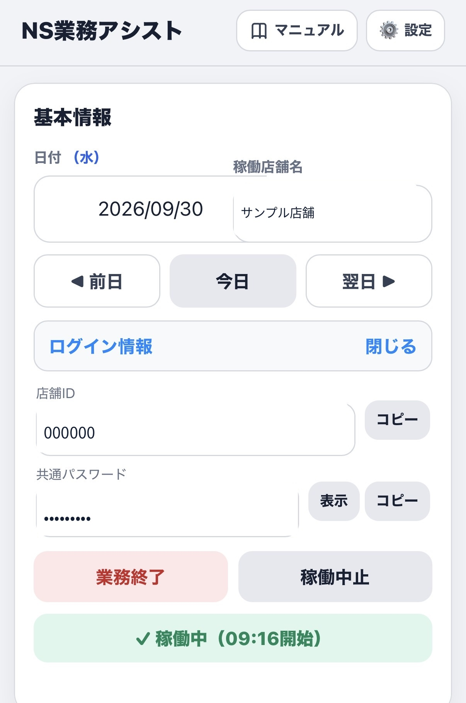
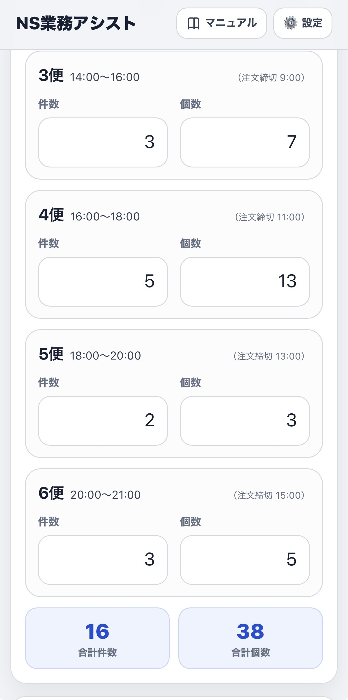
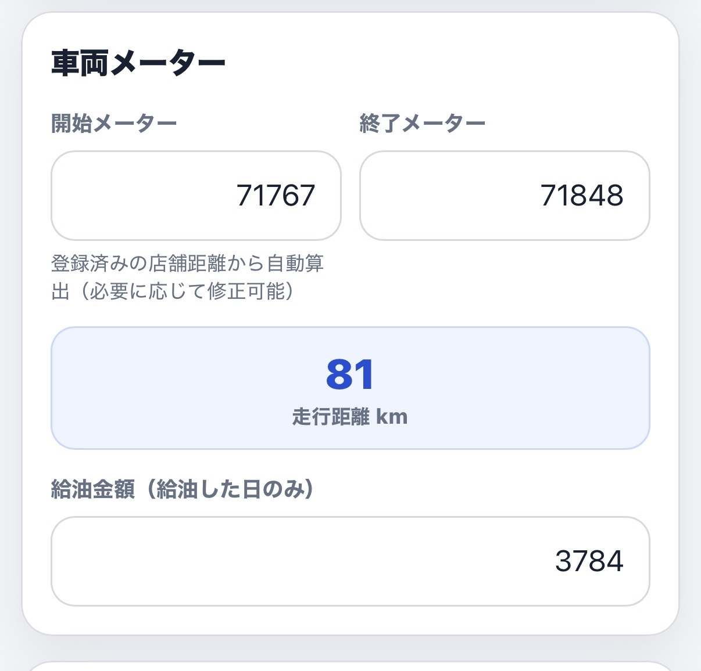

一日の基本的な使い方
日々の操作は、業務開始、各便の記録、業務終了の流れで進めます。
1. 業務開始
日付と稼働店舗を確認し、「業務開始」を押します。
2. 件数・個数
業務の進行に合わせて、各便の件数と個数を記録します。
3. 業務終了
終了メーターなどを入力し、「業務終了」を押します。
基本情報とログイン情報
日付と稼働店舗を確認してから業務を開始します。「ログイン情報」を開くと、登録済みの店舗IDやパスワードを確認できます。

各便の件数・個数
各便の数字を入力すると、合計件数と合計個数が自動で集計されます。配送がない便は、件数と個数に0を入力します。

車両メーターと走行距離
開始・終了メーターから業務走行距離を管理できます。登録した自宅〜店舗間距離を利用し、翌日の開始メーター候補も自動的に用意されます。
候補と実際の車両メーターに差がある場合は、実際の値に修正してください。

業務終了
終了メーターと1〜6便すべての件数・個数が入力されていることを確認し、「業務終了」を押します。
空欄がある場合は、不足している項目が表示されます。0は入力済みとして扱われます。
ShinQLO側での業務終了の入力忘れ防止のため、この業務終了タップが21:00までに完了していなかった場合、本アプリより通知が入ります。業務の遅延や冬季などで「まだ（終了していない）」をタップした場合には、21:30と22:00にもそれぞれ同様の確認通知が入ります。業務終了を押すと、以降の確認通知は入りません。
NS業務アシストの記録とは別に、正式な業務システムで必要な終了報告も忘れずに行ってください。